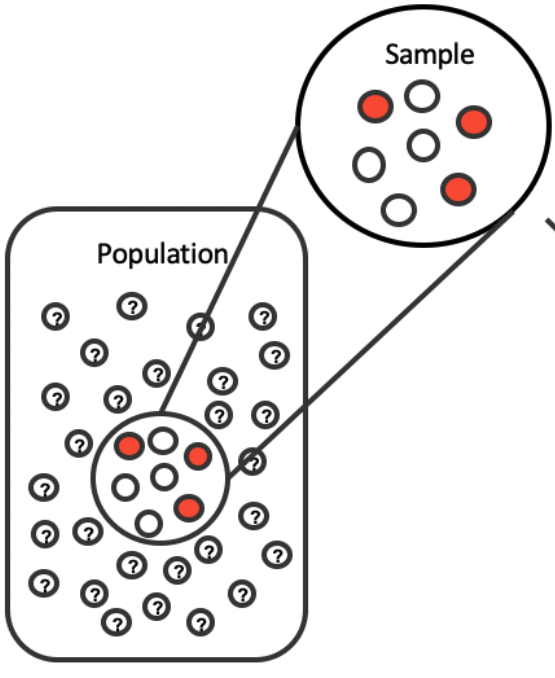
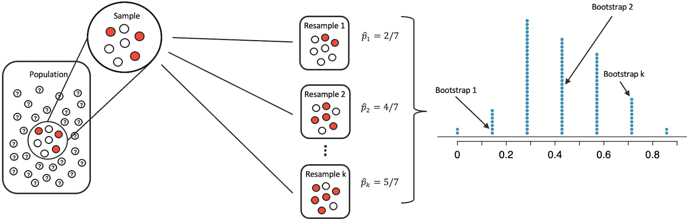
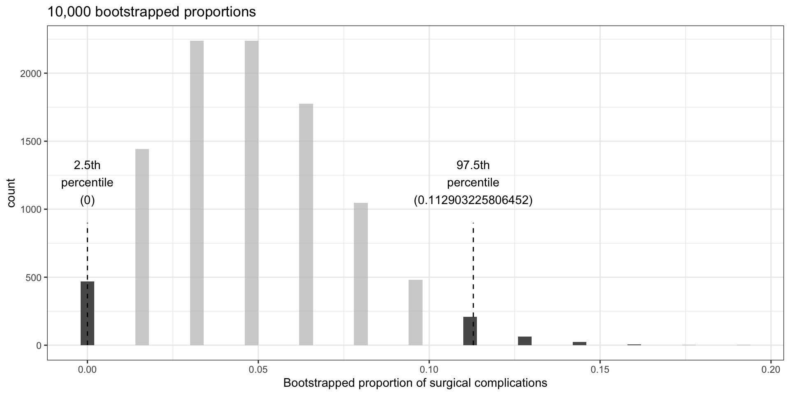
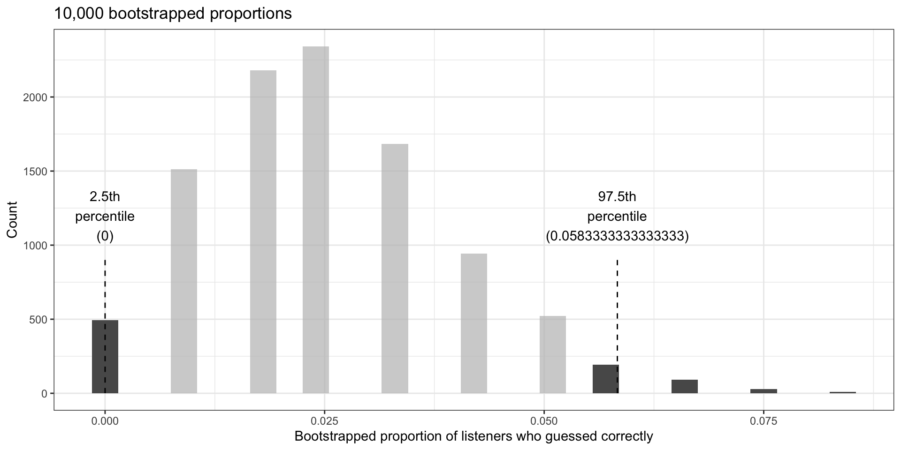

library(tidyverse)library(openintro)library(infer)library(knitr)library(ggpubr)library(kableExtra)library(gghighlight)options(pillar.print_min =9) # to avoid annoying scroll behaviorknitr::opts_chunk$set(out.height ="100%")theme_set(theme_bw())
Previously…
We saw how to use randomization to see whether a difference in sample proportions was due to chance. This was useful for yes/no questions.
e.g., Does this vaccine make it less likely to get a disease? Does drinking caffeine affect athletic performance?
We will now discuss how to estimate the value of an unknown parameter.
e.g. How much less likely am I to get a disease if I get a vaccine? How much faster can I run if I have caffeine?
For simplicity, focus on a single proportion \(p\).
Confidence interval: idea
A confidence interval is a plausible range of values where we expect to find \(p\).
A point estimate\(\hat{p}\) alone gives no sense of how accurate we expect it to be.
An interval provides a sense of confidence of our estimate.
E.g., to estimate the probability of getting heads after flipping a given coin, how confident would we be in the heads-probability estimated from (1 heads, 3 tails)? From (25 heads, 75 tails)?
In both scenarios, the point estimate would be the same: \(\hat{p} = 1/4\).
However, a confidence interval for (1 heads, 3 tails) would wider than an interval for (25 heads, 75 tails). A wider interval reflects less confidence.
Confidence interval: goal
Our goal here is to understand variability of a statistic (point estimate).
Randomization tests modeled how the statistic would change if the treatment had been allocated differently.
Here we instead aim to model how a statistic varies from one sample to another taken from the population.

Confidence interval: our construction approach
Can be hard to quantify the variability of a statistic from sample to sample.
Sometimes the mathematical theory for how a statistic varies (across different samples) is well-known; this is the case for a sample proportion.
However, some statistics do not have simple theory for how they vary.
A computational approach can provide interval estimates for almost any population parameter.
We will construct such confidence intervals using bootstrapping.
Best suited for modeling studies where the data have been generated through random sampling from a population.
Medical consultant: study
People seek out a medical consultant to navigate the donation of a liver.
The average complication rate for liver donor surgeries is 10%.
Suppose her clients have only had 3 complications in the 62 liver surgeries she has facilitated.
Is this strong evidence that her work meaningfully reduces complications?
Let \(p\) = true complication rate for liver donors working with this consultant.
We estimate \(p\) using data; label estimate as \(\hat p\).
In this sample, her estimated complication rate is \(3/62 = 0.048 = \hat p\).
What can we infer from this estimate?
It is NOT possible to assess consultant’s claim using this observational data.
The claim is about a causal connection. There could be confounders, such as:
she refuses to take patients that are likely to have failed surgeries;
those who have medical consultants are richer / healthier and result in fewer complications.
What we can do is to get a sense of consultant’s true rate of complications.
Bootstrapping: the main idea
Suppose we have \(x_1, \dots, x_n\) as a random sample from a population.
If we resample subsets of \(x_1, \dots, x_n\) (with replacement), this “mimics” as if we sample from the true population.
Medical consultant setting: imagine 3 index cards that say “complication” and 59 that say “no complication”. Put them in big bucket. We shuffle the cards, reach in, record what it says, then put the card back into the bucket, and continue until we have pulled out our desired number of cards.
This procedure can give us a sense of sample-to-sample randomness.

Each resample is called a bootstrap sample.
The diagram shows \(k\) bootstrap samples.
Typically each bootstrap sample has the same number of observations as the original sample (but does not have to be the case).
Medical consultant: bootstrap
What if we take 10,000 bootstrap samples of the medical consultant data?
Original data had 62 observations, 3 complications; \(\hat p = 3/62 \approx 0.048\).
tibble(bsprop) |>ggplot(aes(x = bsprop)) +geom_histogram(binwidth =0.004) +gghighlight(bsprop <= bsprop_025_975[1] | bsprop >= bsprop_025_975[2]) +annotate("segment",x = bsprop_025_975[1], y =0,xend = bsprop_025_975[1], yend =900,linetype ="dashed" ) +annotate("segment",x = bsprop_025_975[2], y =0,xend = bsprop_025_975[2], yend =900,linetype ="dashed" ) +annotate("text", x = bsprop_025_975[1], y =1200, label = glue::glue("2.5th\npercentile\n({bsprop_025_975[1]})")) +annotate("text", x = bsprop_025_975[2], y =1200, , label = glue::glue("97.5th\npercentile\n({bsprop_025_975[2]})")) +labs(x ="Bootstrapped proportion of surgical complications",title ="10,000 bootstrapped proportions" )

Figure 1: Histogram of proportions computed from 10,000 bootstrap samples from the original medical consultant data.
The 2.5% percentile is at 0; the 97.5th percentile at 0.113.
Hence we are confident that in the population, the true probability of a complication from the medical consultant is between 0% and 11.3%.
We were asked to compare this to the national rate of 10%.
Our interval \((0\%,11.3\%)\)includes 10%, so cannot say that the consultant’s work was associated with a lower risk of complications – could be by chance.
Even if the interval excluded 10%, we could not make a claim about causality.
Tappers and listeners: study
Study: a person conducts an experiment using the “tapper-listener” game.
Goal: pick a simple, well-known song; tap the tune on your desk; and see if the other person can guess the song.
Data: 120 tappers, 120 listeners, 50% of tappers expected the listener would be able to guess the song.
Is 50% a reasonable guess?
In study, 3 / 120 (\(\hat p = 0.025\)) listeners correctly guessed the song.
Given this, what are typical values one could expect for the proportion?
Tappers and listeners: bootstrap
We can use bootstrapping as before: imagine we have a jar with 120 marbles, 3 are green (guessed correctly) and 117 are red (could not guess the song).
tibble(bsprop) |>ggplot(aes(x = bsprop)) +geom_histogram(binwidth =0.003) +gghighlight(bsprop <= bsprop_025_975[1] | bsprop >= bsprop_025_975[2]) +annotate("segment",x = bsprop_025_975[1], y =0,xend = bsprop_025_975[1], yend =900,linetype ="dashed" ) +annotate("segment",x = bsprop_025_975[2], y =0,xend = bsprop_025_975[2], yend =900,linetype ="dashed" ) +annotate("text", x = bsprop_025_975[1], y =1200, label = glue::glue("2.5th\npercentile\n({bsprop_025_975[1]})")) +annotate("text", x = bsprop_025_975[2], y =1200, , label = glue::glue("97.5th\npercentile\n({bsprop_025_975[2]})")) +labs(x ="Bootstrapped proportion of listeners who guessed correctly",y ="Count",title ="10,000 bootstrapped proportions" )

Figure 2: Histogram of proportions computed from 10,000 bootstrap samples from the original tapper-listener data.
Expect between 0-5.83% are able to guess tapper’s tune
General: bootstrap confidence interval
Confidence interval: plausible range of values for (unknown) population parameter \(p\).
Bootstrap procedure: if we have \(n\) observations, responses in two categories, with initial estimated proportion \(\hat p\) for proportion in category #1.
Randomly sample the \(n\) observations with replacement
Each resample is called a “bootstrap sample”; let’s index the bootstrap samples as \(i=1,2, \ldots, m\), where \(m\) could be 100 or 1000 or 10000, etc.
Each bootstrap sample produces a different proportion estimate \(\hat p_{boot, i}\)
We examine the distribution of the \(\hat p_{boot, i}\) (dot plot, histogram, …)
All the \(\hat p_{boot,i}\) will be centered around baseline \(\hat p\)
Original \(\hat p\) is centered around the population \(p\)
Thus interval estimate for \(p\) can be computed using \(\hat p_{boot, i}\)
More formally, the 95% bootstrap confidence interval for parameter \(p\) can be estimated using the (ordered) \(\hat p_{boot, i}\) values.